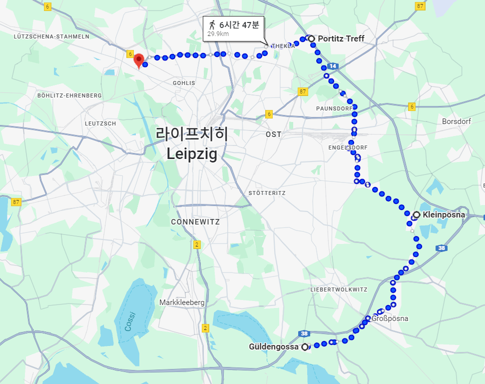
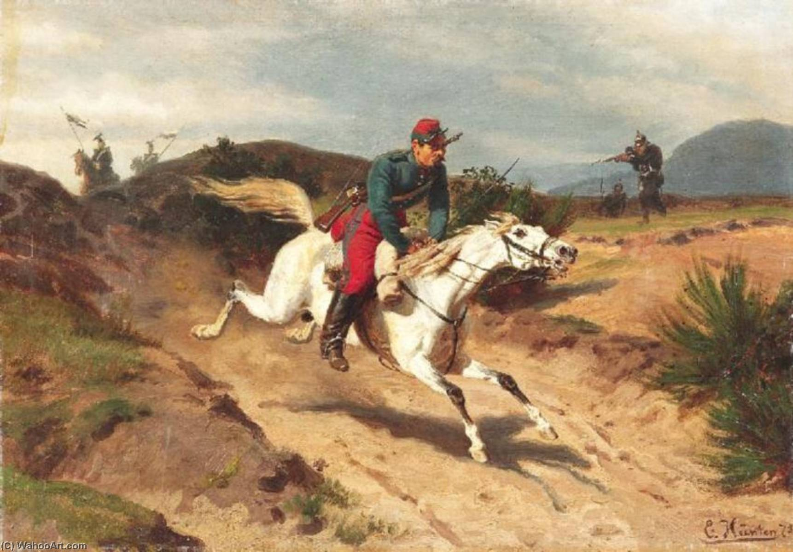
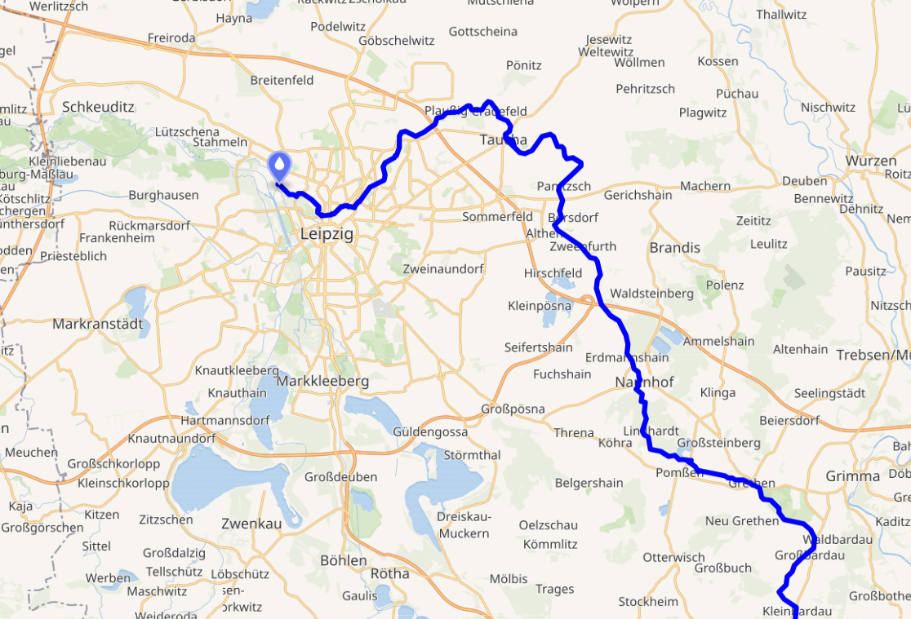
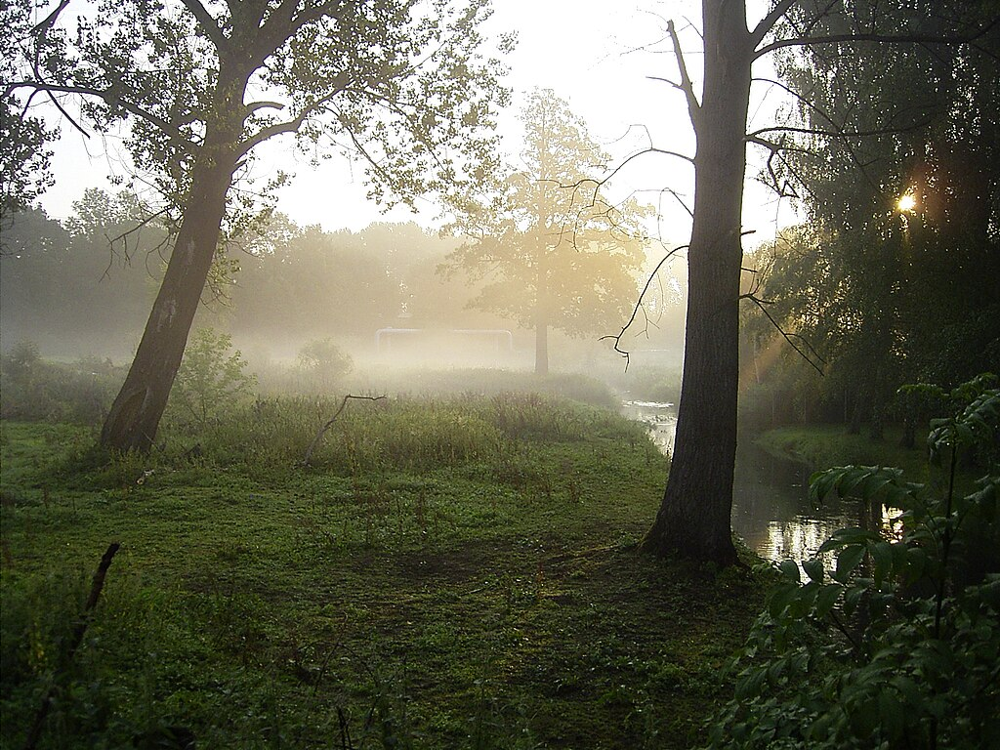

라이프치히 전투 (23) - 조여드는 포위망
게시: 2025-11-10T06:30:44+09:00
17일 오전 10시경부터 포성이 울려퍼진 이유는 블뤼허의 슐레지엔 방면군이 라이프치히 쪽으로 진격하면서 벌어진 전투 때문이었습니다. 왜 블뤼허는 제발 17일 하루 동안은 아무 일 없이 지나가기를 기도하던 슈바르첸베르크의 염원을 저버리고 이렇게 사고를 친 것이었을까요? 실은 이것도 연합군이 라이프치히를 끼고 남북으로 분리되어 있었기 때문에 발생한 문제였습니다. 보헤미아 방면군이 17일은 되도록 싸우지 말고 증원군을 기다리기로 결정한 사실을 블뤼허는 몰랐던 것입니다. 이건 어떻게 보면 어쩔 수 없는 일이었습니다. 원래 슈바르첸베르크는 전투 둘째 날에도 당연히 전투를 이어갈 생각이었고, 블뤼허와는 새벽 6시 30분 경에 자신이 먼저 공격을 시작할 것이 그 포성을 신호로 슐레지엔 방면군도 공격을 개시해달라고 했던 것입니다. 그러나 의외로 나폴레옹 측에서 둘째 날 아침 해가 뜬 이후에도 아무런 움직임을 보이지 않자, 이미 언급한 대로 베니히센 등의 증원군이 올 때까지 기다리는 것이 유리했으므로 구태여 연합군에서 전투를 시작할 필요는 없다고 결론을 내렸습니다. 문제는 이 소식을 라이프치히 북쪽의 블뤼허에게 기마 전령을 통해 전달하는데까지는 시간이 걸린다는 것이었습니다. 실은 그것이, 수적 우위를 가진 연합군의 약점이었습니다.

(적 기병 정찰대의 활동량, 도로의 상황, 그리고 무엇보다 전령 개인의 역량과 운에 따라 천차만별이겠습니다만, 당시 기마 전령의 이동 속도는 시간당 15km 정도였습니다. 그런데 그건 정말 1시간만 달릴 때 이야기이고, 1시간 정도 달리고 나면 말이 지쳐 버리므로 말을 교체해주어야 했습니다. 그래서 당시 프랑스 국내에서는 우편 파발마를 위한 역참은 8km마다 한 곳씩 두었다고 합니다만, 전쟁터에서야 그럴 수는 없었습니다. 당시 어떤 경로를 통해서 슈바르첸베르크와 블뤼허가 편지를 나누었는지는 알 수 없으나, 슈바르첸베르크의 사령부인 귈덴고사(Güldengossa)로부터 블뤼허가 있는 뫼케른(Möckern)까지 저렇게 라이프치히를 돌아서 가면 대충 30km가 나오는데, 지친 말을 타고, 그것도 도중에 파르터(Parthe) 강을 건너자면, 4시간은 족히 걸렸을 것입니다.)

(이 그림은 1870년의 보불 전쟁 중 적군의 추격을 뿌리치고 말을 달리는 기마 전령의 모습을 그린 에밀 휜텐(Emil Hünten)의 1872년 그림입니다. 휜텐은 독일 화가인데, 독특하게도 프로이센군이 아니라 프랑스군 전령을 그렸네요? 좌측 배경으로는 당시 프로이센군 소속이던 폴란드 기병대의 모습이 보입니다.) 새벽 일찍부터 병사들을 깨워 아침을 지어 먹게 하고 아침 6시 30분부터 공격 태세를 갖추고 있던 블뤼허는 아무리 기다려도 남부 전선에서 포성이 들려오지 않자, 망설일 수밖에 없었습니다. 하지만 결국 블뤼허는 공격을 시작했습니다. 이유는 간단했습니다. 남쪽 전선의 보헤미아 방면군과 연결을 위해서는 좋든 싫든 눈 앞의 적을 밀어내야 했던 것입니다. 어제의 혈투로 인해 만신창이가 된 요크의 프로이센 군단은 2선으로 물러났고, 대신 자켄의 러시아 군단이 앞장 서서 남진을 시작했습니다. 이들과 대치하던 마르몽의 제6군단은 이미 밤 사이에 뷔르템부르크군과 폴란드군, 델마의 사단 등으로 구성된 소수의 후위부대만 남기고 모두 파르터(Parthe) 강 남쪽으로 후퇴한 뒤였습니다. 따라서 블뤼허의 진격을 막아서는 그랑다르메의 반격이 거세지는 않았습니다. 오전 중에 그랑다르메 병력은 모두 파르터강 우안, 그러니까 북쪽 강변의 대부분 지역에서 쫓겨나 물러났습니다. 그러나 거기서부터는 진격이 쉽지 않았습니다. 파르터강은 양안이 모두 늪지대인데다 파르터강 인근에는 그랑다르메 병력이 포진하고 있었으므로, 파르터강을 건너는 것이 어렵기 때문이었습니다. 결국 파르터강을 건너기 위해서는 수km 상류인 타우하 쪽으로 이동하여 그 일대의 여울목을 찾아 건너야 했는데, 이는 시간이 필요한 일이었습니다. 블뤼허는 2만의 병력을 파르터강 우안에 포진시켜 방어 태세를 취하도록 하고, 2만5천의 병력을 동쪽으로 보내 여울목을 찾도록 했습니다. 이렇게 블뤼허의 진격이 파르터강에 막혀 지연된 것을 보면, 하루 전인 16일 전투에서 마르몽이 이렇게 소수 병력만 파르터 강변에 남겨두고 나폴레옹의 지시대로 남쪽 전선으로 달려갔다면 어땠을까 하는 아쉬움이 다시 듭니다.

(파르터강은 라이프치히 남동쪽으로부터 흘러와서 라이프치히 북서쪽에서 엘스터강과 합류하는 지류입니다. 뫼케른, 골리스, 오이트리츠쉬, 모카우 등은 모두 파르터 북쪽에 있는 지점들이고, 쇤너펠트는 파르터강 남안에 접해 있습니다.)

(파르터강은 결코 큰 강은 아니지만, 특히 10월 16~18일의 라이프치히 전투 당시에는 그 전에 내린 비로 인해 물이 크게 불어나 사람이 걸어서 건널 수는 없는 상황이었습니다.) 그러나 그때 즈음해서야 남쪽 보헤미아 방면군으로부터 아침에 출발했던 전령이 도착하여, 전투는 증원군이 도착한 뒤인 18일에 재개하기로 했으니, 슐레지엔 방면군도 가급적 전투를 회피하라는 소식을 전해왔습니다. 블뤼허도 마침 파르터강에 막힌 상황이었으므로, 그에 따르기로 하면서 17일의 이 소동은 마무리되었습니다. 정확하게는 이 소동이 마무리 되는데는 시간이 더 걸렸습니다. 블뤼허가 전투 연기에 동의했다는 것이 남쪽 슈바르첸베르크에게 전달되는데까지 또 시간이 걸렸기 때문이었습니다. 북쪽에서 포성이 들리자, 슈바르첸베르크는 '남쪽 전선에서 보헤미아 방면군을 붕괴 직전까지 몰아붙였던 나폴레옹이 이번에는 북쪽 전선으로 병력을 돌려 슐레지엔 방면군을 집중공격하는 모양'이라고 생각하고는, 원래 계획과는 달리 부랴부랴 남쪽에서도 전투 재개를 준비해야 했습니다. 남쪽에서도 전투를 재개해야 나폴레옹이 슐레지엔 방면군을 공격하는 강도가 분산될 수 있기 때문이었습니다. 그러나 이 공격 준비에는 시간이 걸렸으므로, 오후 2시경에나 공격을 시작하기로 했는데, 다행히 북쪽에서 들려오던 포성이 2시 전에 뚝 끊겼기 때문에 슈바르첸베르크도 공격을 중지시킬 수 있었습니다. 이런 작은 소동 외에는 연합군 측의 준비는 순조로운 편이었습니다. 베니히센의 폴란드 방면군도 제 시간에 도착할 예정이었고, 무엇보다 그동안 소식이 없었던 베르나도트의 북부 방면군도 사령부의 요청대로 18일 중에는 라이프치히 북쪽에 도착할 것이라고 전갈이 왔습니다. 베르나도트의 접근 방향이 블뤼허의 뒤쪽, 그러니까 북서쪽이었기 때문에 베르나도트와 직접 교신할 수 있었던 것은 그 누구보다도 싫어했던 블뤼허였습니다. 블뤼허가 원했던 베르나도트의 위치는 자신의 좌익, 그러니까 바트 뒤벤으로 향하는 라이프치히 북동쪽 방면이었습니다. 그 쪽을 누군가가 채워줘야 남쪽의 보헤미아 방면군과 연결이 되는 셈이었으니까요. 그런데 베르나도트는 그 쪽을 맡아달라는 블뤼허의 편지에 대해 이런저런 핑계를 대며 회피했습니다. 대체 이유가 무엇이었을까요? 실은 블뤼허나 슈바르첸베르크, 그리고 베르나도트 등 모두가, 나폴레옹은 이번 전투에서 절대 이길 수 없다는 것을 알고 있었습니다. 따라서 나폴레옹은 결국엔 반드시 탈출구를 찾게 될 텐데, 문제는 그 탈출구가 어디가 될 것이냐 하는 것이었습니다. 상식적인 탈출구는 서쪽인 린더나우 방면이었습니다. 그러나 거기엔 이미 귤라이의 오스트리아군이 틀어막고 있었고, 그 바로 남북쪽으로 인접한 곳에는 슈바르첸베르크의 좌익과 블뤼허의 우익이 버티고 있었으므로 나폴레옹이 그 좁은 틈을 뚫고 탈출하려다가는 남북에서 협격당하기 딱 좋았습니다. 게다가, 혹시라도 어찌어찌 그 함정을 뚫고 탈출한다고 하더라도, 그 서쪽에는 나폴레옹을 배신한 바이에른군이 오스트리아군과 합세하여 나폴레옹을 요격하기 위해 기다리고 있었습니다. 그래서 연합군 수뇌부는 서쪽은 그다지 걱정하지 않았습니다.

(이것이 10월 16일, 라이프치히 전투 첫째 날의 상황입니다. 누가 봐도 연합군 포위망이 공백이 어디인지는 눈에 훤히 보입니다.) 문제는 북동쪽이었습니다. 라이프치히 동쪽은 베니히센의 폴란드 방면군이 도착하면서 틀어막았으나, 연합군의 포위망은 아직 라이프치히 북동쪽까지는 미치지 못한 상태였습니다. 게다가 그 북동쪽 방면은 레이니에 등 그랑다르메의 추가 증원군이 도착할 경로였으니, 반대로 그 경로를 탈출구로 이용할 수 있었습니다. 무엇보다, 그 쪽에는 그랑다르메의 거점인 토르가우 요새가 있었고, 또 거기를 통해 나폴레옹은 전에 시도했던 것처럼 베를린으로 진격할 수도 있고, 반대로 드레스덴으로 퇴각할 수도 있었습니다. 따라서 연합군 수뇌부는 궁지에 몰린 나폴레옹이 북동쪽으로 탈출을 시도할 가능성이 높다고 판단했습니다. 베르나도트도 그 사실을 잘 알고 있었고, 그래서 더더욱 그 방면을 틀어막는 역할에 대해서는 손사래를 쳤습니다. 베르나도트는 제1선에 나서는 것을 꺼려했으며, 슐레지엔 방면군 뒤에서 지원 역할만 하려는 의도를 숨기지 않았습니다. 그가 이번 전쟁에서 바라는 것은 노르웨이 획득뿐이었으므로, 그는 전투에서는 생색만 내고 스웨덴군의 피해는 최소화하려 했던 것입니다. 궁지에 몰리면 쥐도 고양이를 문다는데, 궁지에 몰려 필사적으로 탈출에 나서는 나폴레옹의 앞길을 막는 것은 베르나도트로서는 절대 하고 싶지 않은 일이었습니다. 이렇게 베르나도트가 비협조적으로 나오는 것을 짜르 알렉산드르나 슈바르첸베르크의 도움 없이 혼자서 설득해야 했던 블뤼허로서는 정말 죽을 맛이었습니다. 그러나 17일 밤~18일 새벽 사이에 블뤼허가 베르나도트와 직접 만나 담판을 지은 결과, 결국 베르나도트는 블뤼허의 요청대로 라이프치히 북동쪽을 틀어막는 것에 극적으로 동의하게 됩니다. 이는 베르나도트가 들이민 말도 안 되는 요구 조건을 블뤼허가 살신성인의 마음가짐으로 수락했기 때문에 가능한 일이었습니다. 대체 베르나도트는 어떤 것을 요구했던 것일까요? Source : The Life of Napoleon Bonaparte, by William Milligan Sloane Napoleon and the Struggle for Germany, by Leggiere, Michael V With Napoleon's Guns by Colonel Jean-Nicolas-Auguste Noël https://www.britannica.com/event/Napoleonic-Wars/Dispositions-for-the-autumn-campaign http://www.historyofwar.org/articles/campaign_leipzig.html https://warhistory.org/@msw/article/leipzig-battle-of-the-nations https://www.encyclopedia.com/history/encyclopedias-almanacs-transcripts-and-maps/leipzig-battle-0 https://www.napoleon.org/histoire-des-2-empires/articles/napoleon-et-les-telecommunications https://www.invaluable.com/auction-lot/great-franco-prussian-war-painting-254-c-8464cfbb81 https://en.wikipedia.org/wiki/Parthe